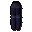

Louies' Armoured Legs Bazaar.
Inventory config
legsshopRun by  Louie legs. Open in knowledge graph →
Louie legs. Open in knowledge graph →
Located in: Shantay Pass
Stock
| Item | Stock | Value | Sells for |
|---|---|---|---|
| 5 | 80 gp | 80 gp | |
| 3 | 280 gp | 280 gp | |
| 2 | 1000 gp | 1000 gp | |
| 1 | 1920 gp | 1920 gp | |
 Mithril platelegs | 1 | 2600 gp | 2600 gp |
| 1 | 6400 gp | 6400 gp |
Shop sells at 100.0% of item value and buys at 65.0%.